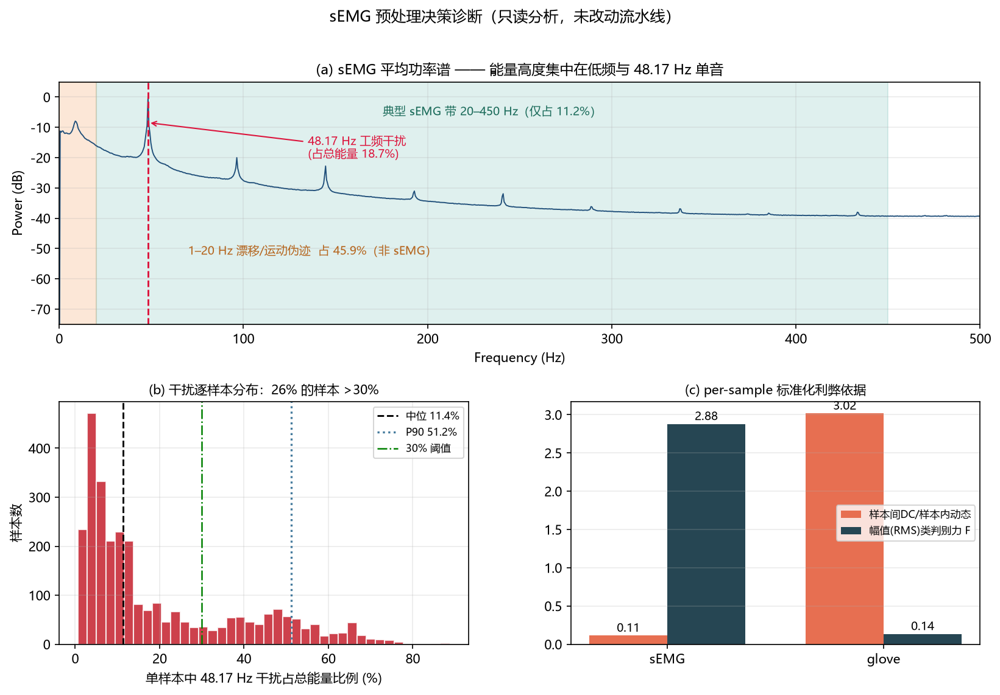
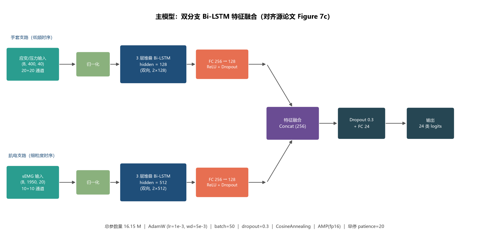
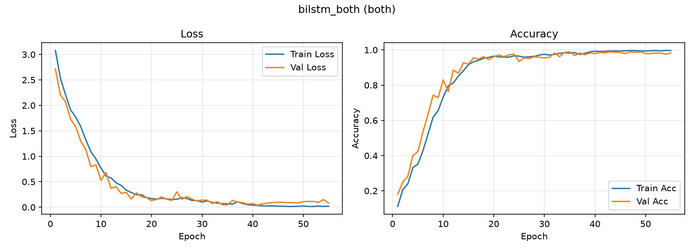
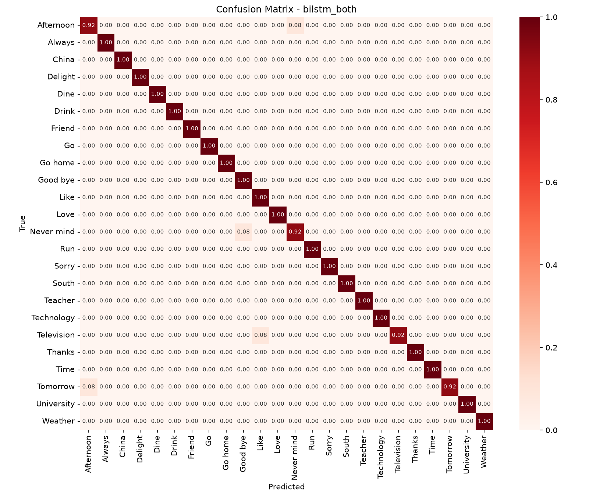
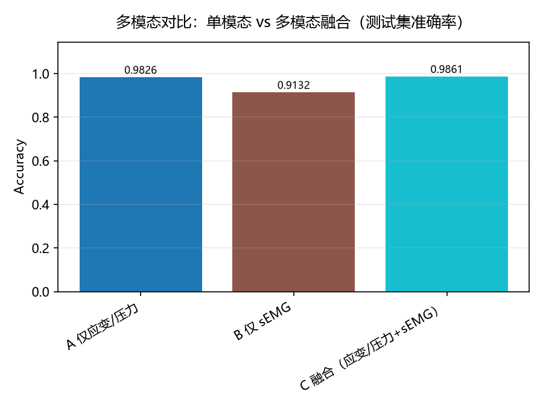
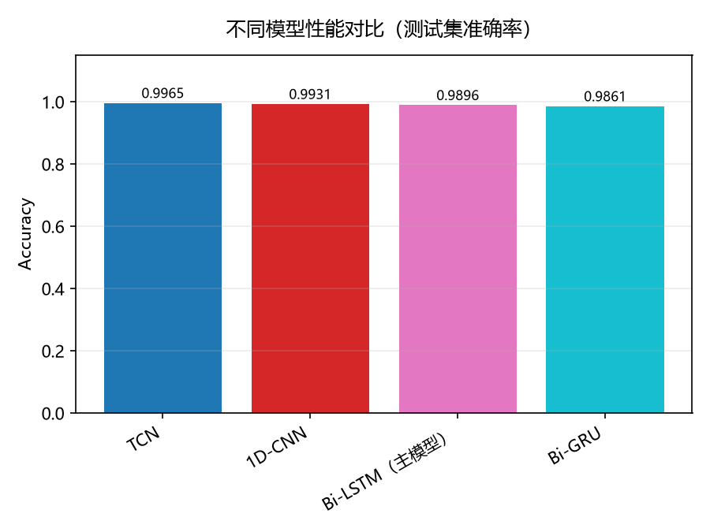
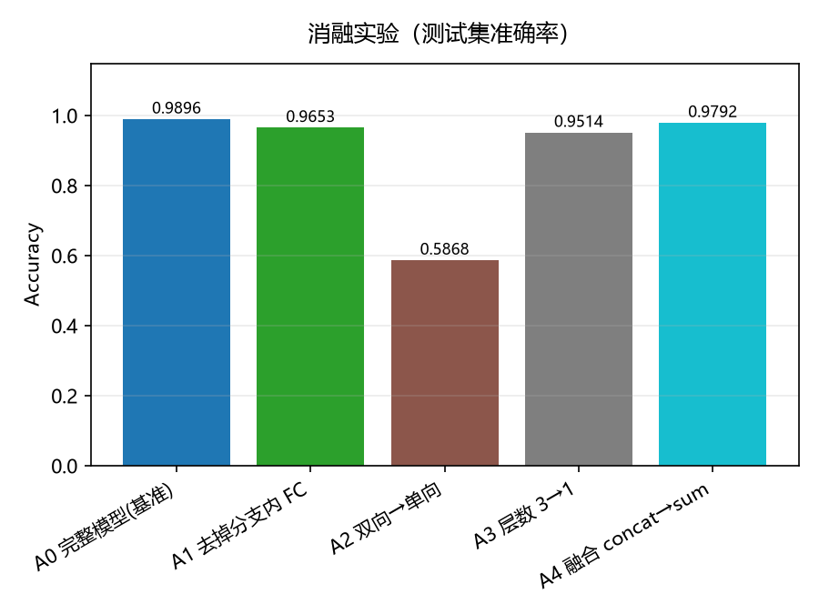
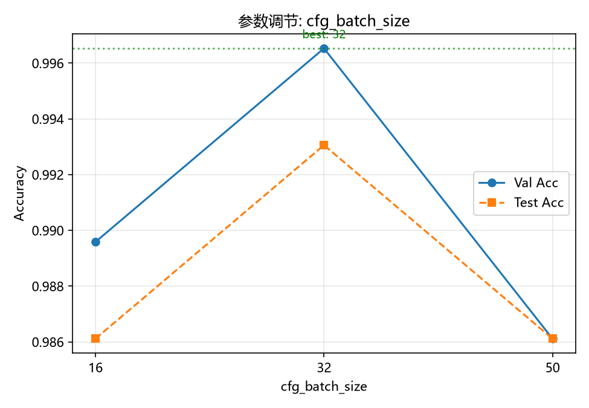
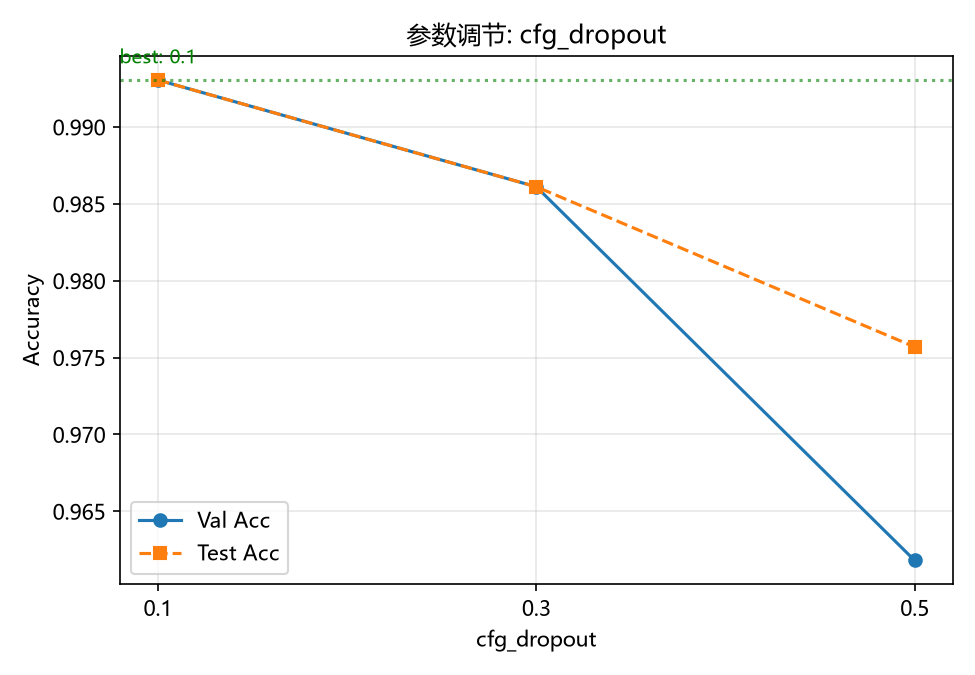

| 检查项 | 结果 |
|---|---|
| 样本总量 | 24 类 × 120 = 2880，每类恰好 120 |
| res1 / res2 | 左右手应变·压力，(20, 400)，200 Hz |
| muscle1 / muscle2 | 左右手 sEMG，(10, 1950)，1000 Hz |
| 形状一致性 | 4 个键 × 2880 全部一致 |
| NaN / Inf / 读取失败 | 0 |
| 划分 | 按 .pkl 分层 8:1:1 → 2304 / 288 / 288 |
| 两类必须先处理的问题（依据 → 处理） |
|---|
| 离群尖峰：res2 幅值最高 3988（常见仅个位数量级），集中在 Run / Weather / Love 的个别文件 → 1% / 99% 分位截断 |
| 8 个死通道：索引 14,15,17,18,19,20,21,22，全局 std 0.016（有效通道 0.3~93）→ 标准化后置零 |
| sEMG 信号质量：65% 能量是漂移 + 工频（下页详述）→ 带通 + 陷波滤波器已写好，留作对比实验 |

| 频带 | 占总能量 |
|---|---|
| 1–20 Hz 漂移 / 运动伪迹 | 45.9% |
| 20–50 Hz | 40.6% |
| 48.17 Hz 工频单音 | 18.7% 谐波 96.3 / 144.5 Hz |
| 51–450 Hz 真 sEMG | 11.2% |
| 450–500 Hz 噪声 | 0.2% |
| 26.4% 的样本 >30% 能量压在工频峰上（max 88.8%） | |



| 真实 → 误判 | 类间 Pearson r |
|---|---|
| Television → Like | 0.857（相似度 Top-10） |
| Tomorrow → Afternoon | —（未入 Top-10） |
| Never mind → Good bye | — |
| Afternoon → Never mind | — |
| 召回最低 4 类（均 0.917）： Afternoon · Never mind · Tomorrow · Television | |
| 最相似类别对（训练前算得）： Teacher↔Tomorrow 0.958 · Tomorrow↔Weather 0.924 · China↔Tomorrow 0.862 | |

| 设置 | 测试 Accuracy | 论文 | 差 |
|---|---|---|---|
| C 融合 | 98.61% | 99.65% | −1.04 |
| A 仅应变/压力 | 98.26% | 83.75% | +14.51 |
| B 仅 sEMG | 91.32% | 88.02% | +3.30 |
| B 剔除近重复后 89.50% —— 与论文 88.02% 更接近 | |||
| 排序一致；但论文宣称融合增益 +15.9pp，本复现只有 +0.35pp | |||

| 模型 | 测试 Acc | 参数量 | 收敛 |
|---|---|---|---|
| TCN | 99.65% | 0.30 M | 6 轮 |
| 1D-CNN | 99.31% | 0.25 M | 4 轮 |
| Bi-LSTM（主） | 98.96% | 16.15 M | 29 轮 |
| Bi-GRU | 98.61% | 11.98 M | 16 轮 |
| 差异 ≤2 个样本（288 测试），置信区间高度重叠 | |||
| 正确表述：数量级相当，卷积类以 1/50 参数达到同等水平 | |||

| 消融项 | 测试 Acc | Δ |
|---|---|---|
| A0 完整（基准） | 98.96% | — |
| A1 去掉分支内 2 层 FC | 96.53% | −2.43pp |
| A2 双向 → 单向 | 58.68% | −40.28pp |
| A3 层数 3 → 1 | 95.14% | −3.82pp |
| A4 融合 concat → sum | 97.92% | −1.04pp |
| A2 的训练集准确率也只有 57%：欠拟合， 是 1950 步长序列上单向 LSTM 优化困难， 不能表述为"双向结构必需" | ||


| 配置 | lr | Batch | Dropout | 测试 Accuracy |
|---|---|---|---|---|
| 源论文基线 | 0.001 | 50 | 0.3 | 98.61% |
| 单项最优 · Batch | 0.001 | 32 | 0.3 | 99.31% 全部 Bi-LSTM 实验最优 |
| 单项最优 · 学习率 | 0.002 | 50 | 0.3 | 98.96% |
| 单项最优 · Dropout | 0.001 | 50 | 0.1 | 99.31% |
| 三项叠加 | 0.002 | 32 | 0.1 | 98.26% 末轮 train 100% / val 96.88% → 过拟合 |
| 结论：超参数之间存在交互，单项最优不可简单叠加；最终采用 lr 0.001 · Batch 32 · Dropout 0.3 | ||||
| 项目 | 源论文 | 本复现 | 判定 |
|---|---|---|---|
| 融合准确率 | 99.65% | 98.61% 调参后 99.31% · TCN 99.65% | 复现成功 |
| 仅应变/压力 | 83.75% | 98.26% 高出 14.5pp | 显著分歧 |
| 仅 sEMG | 88.02% | 91.32% 剔除近重复后 89.50% | 接近 |
| 架构与超参 | 双分支 Bi-LSTM AdamW · 50 · 1e-3 · 0.3 | 已复现 同种子可复跑 | 一致 |
| 分歧归因：已排除泄漏 / 划分错误 / 标签错误；最可能是论文单模态实验为"测试时模态剪枝"（无法核实） | |||
| 配置 | 测试 Acc | sEMG 被用了吗 |
|---|---|---|
| 不滤波融合（基线） | 99.31% | 否 · 288/288 预测不变 |
| 模态 Dropout 30% | 98.96% | 否 · 288/288 |
| 模态 Dropout 50% | 98.61% | 否 · 288/288 |
| 滤波后融合 | 95.49% | 是（−36.46pp）但更差 |
| 仅 sEMG（不滤波） | 89.24% | — |
| 仅 sEMG（滤波） | 75.69% | 滤波反而 −13.55pp |
| 四组独立证据 |
|---|
| ① 推理剪枝：推理时把 sEMG 置零 → 预测逐样本一字不差（288/288）；把手套置零 → 退化成随机（4.17%） |
| ② 模态 Dropout：训练时强行丢模态，模型的训练集准确率被钉在 0.7617 = 0.75×100%+0.25×4%，说明它宁可牺牲 25% 样本也不学 sEMG |
| ③ Oracle 上限：任一模型判对即算对 → 5 组里 4 组的天花板就等于当前成绩（净空间 0.00pp）。即理论上也没有改进余地 |
| ④ 多种子：Bi-LSTM 98.96±0.40%，TCN 99.42±0.40%，差值 0.46pp 小于种子波动 |
| 结论：sEMG 怎么处理都带不来增益；且引入 sEMG 有 29 个样本（10.1%）会反而丢分 |